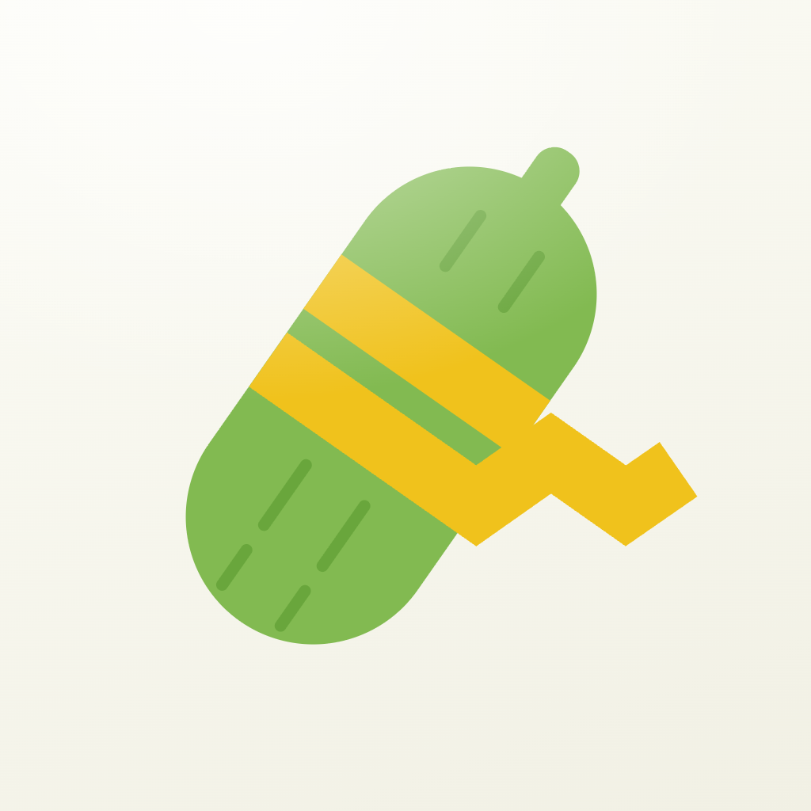
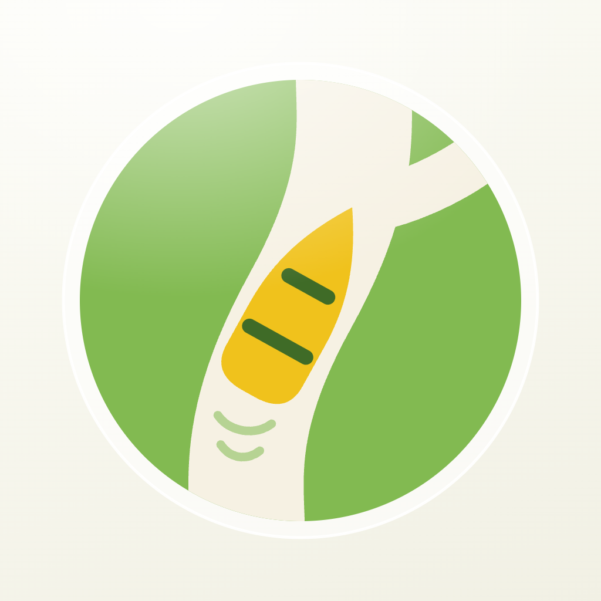

Voller, end to end
Everything that ships, in one place: the wordmark, the three appearance variants, the size ladder down to the favicon, the family line-up, and the marks in place on a page.


One icon, five sizes, one favicon
With 3a the word carries the name, so the icon is free to be pure symbol — it never has to sit next to type. Both candidates below are the same disc-and-glass-ring silhouette as your other four apps, run down the real size ladder: 1024 app icon, 180 touch icon, 64, 32 and 16px favicon, in a light and dark browser tab. 4a is the channel; 4b is the five tiles.
Channel + one app · recommended
Two shapes only, so it holds all the way down to 16px. Below 32px the gold tile is under 3px and turns to mud — so at 32px and below the favicon goes full-bleed green with the channel alone — no ring, no tile, no field. One documented simplification, same mark.
Five apps in the disc
More literal about what Voller is — five apps, one house. But six shapes is five too many for a favicon: at 16px the cluster closes up into a blob, and at 32px it reads as a face. Worth it only if the app icon matters more to you than the tab.
Fixing the icon-plus-name problem
The pairing reads wrong because the disc is a second focal point next to the word — and the gold tile inside it pulls the eye away from the name. Either the word leads and the mark shrinks to a signature (3a, 3c), or the mark is deliberately oversized and the type steps back (3b, 3d). Each is shown at hero size and at 22px header size.
Word leads, tile signs
No disc in the wordmark at all. One gold app tile sits after the name as a full stop — gold spent once, nothing competing. The circular icon stays for app stores, avatars and the favicon.
Optically tuned pair
Keeps both, but stops them fighting: disc at 1.3× cap height, gap set to a third of the disc, type dropped to 500 weight so the dense mark carries the weight instead of the letters.
Uncontained tiles
The disc is what makes the lockup feel like an app icon glued to a name. Drop it and the five tiles become a light V-cluster the eye reads as a signature, not a badge.
Stacked
Side-by-side is the hard arrangement; stacked, the disc gets to be the focal point and the name becomes a caption under it. Good for an About page, a footer or the app-store card — less good in a tight header.
Three that say “the company that writes the apps”
Now that gold has a verb, it goes on the app. 2a makes your squares literal app icons at the system's own 23.5% radius. 2b inverts figure and ground so the parent reads as the field the family sits in. 2c is the 1b channel with one gold app coming off it — my pick.
Five apps, contained
Your original idea, on-system: the dots become squircles at the same 23.5% radius as a real app icon, held in the glass ring. Gold is the next app shipped.
Inverted channel
1b with figure and ground swapped: cream disc, green V. The parent brand becomes the field its apps sit in — related but never mistaken for one of them on a home screen.
Channel + one app
The 1b channel, but gold is spent on a single app tile resting in the V — squircle at the system radius. The V reads as the letter and as the funnel the apps come out of. One focal point, survives 29pt.
Three ways to bring Voller into the family
Quincunx, refit
Verb: choosing. Your five-square V, rebuilt from circles on the light field. The apex — the one you land on — takes the gold. 778pt footprint, minimum change from today.
V channel
Verb: travelling through. The V becomes a cream channel across a green disc, arms on the system's 35° axis, and the turn at the vertex in gold. Closest sibling to Riverly and Meal Planner; strongest at 29pt.
Contained quincunx
Verb: choosing. The same five-dot V, but held inside the glass ring and green disc — the token that ties the circular icons together. Keeps your mark's identity while joining the family's silhouette.
Every direction below is on the 1024 grid, uses only the six brand values, ships all three appearance variants, and spends gold exactly once. They differ in how far they move from your current five-square mark — and in which shape carries the verb. Reference ids in chat: 1a, 1b, 1c.